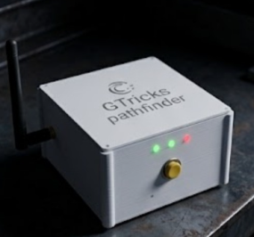
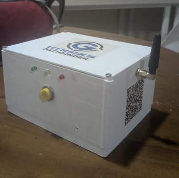
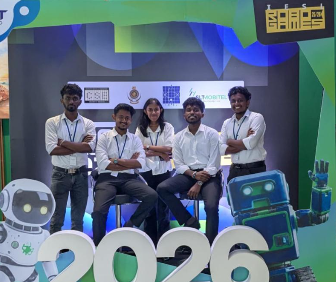

Project Overview
PathFinder is an industrial-grade AIoT safety network engineered for remote environments where conventional telecommunications infrastructure is entirely absent. The system deploys autonomous smart posts at 2–5 km intervals along hiking trails, coastal zones, and wilderness areas, creating a self-sustaining, offline-first mesh network that enables emergency communication, real-time environmental monitoring, and wildlife threat detection — without any dependency on cellular networks, internet connectivity, or satellite subscriptions.
The project was developed by Team GTricks at the University of Moratuwa for the SLIoT Challenge 2026 under the theme AIoT for a Sustainable Future.
Why it matters
Offline-first design
- Built to work without cellular or internet access.
- Ideal for remote trails, forests, and coastal areas.
Smart safety network
- Supports emergency communication and alerts.
- Creates a connected safety layer across long distances.
AI and monitoring
- Supports real-time environmental awareness.
- Includes wildlife threat detection and situation monitoring.
Product Gallery

Front view of the GTricks Pathfinder node.

Deployment-ready hardware design for remote safety use.

Team GTricks during the challenge presentation.
Project Links
Achievements
- Developed by Team GTricks at the University of Moratuwa.
- Presented under the SLIoT Challenge 2026 theme: AIoT for a Sustainable Future.
- Designed to address real-world wilderness safety challenges in connectivity-limited environments.
- Demonstrates practical AIoT innovation for remote monitoring and emergency response.